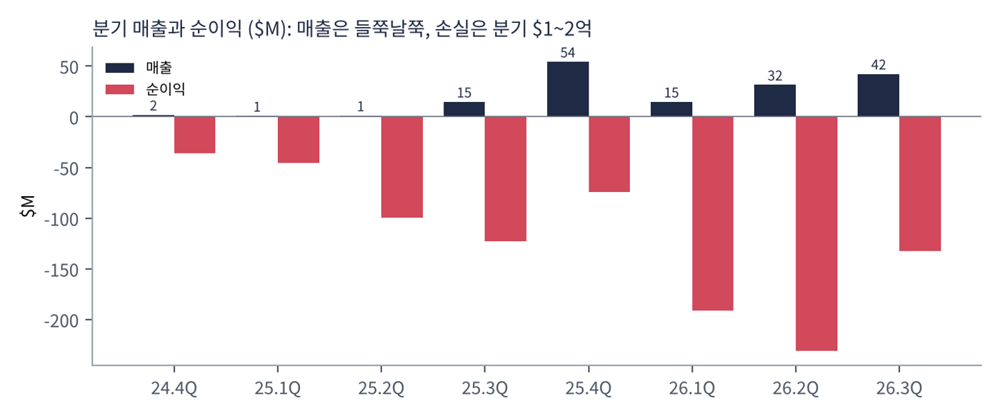
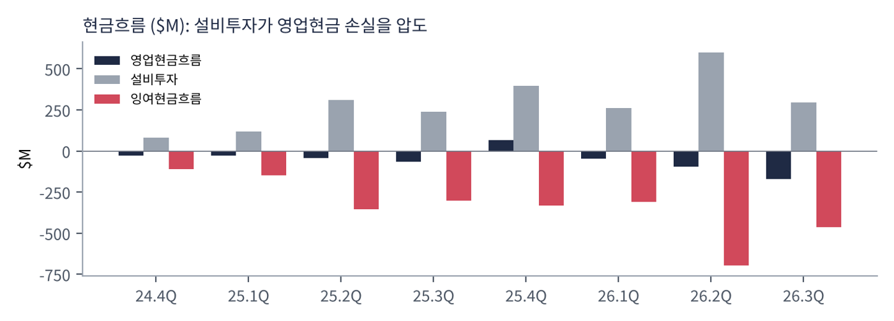
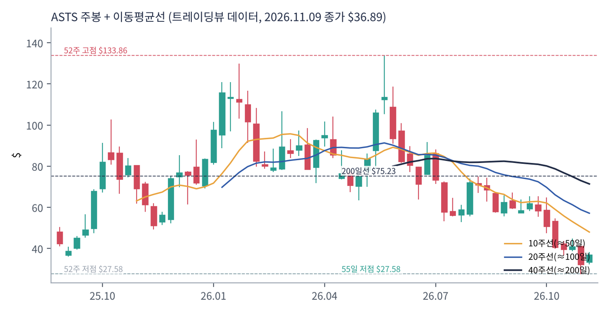
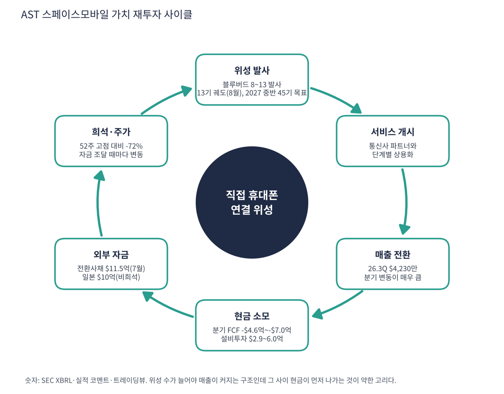

AST 스페이스모바일은 일반 스마트폰이 별도 장비 없이 우주의 위성과 직접 연결되게 하는 저궤도 위성 통신망을 만드는 회사다. AT&T·버라이즌·보다폰 등 이동통신사와 손잡고 지상 기지국이 닿지 않는 곳까지 음성·데이터를 제공하는 것이 목표다. 아직 위성 수가 적어 서비스가 부분적이며, 매출은 위성 장비·정부 계약 등으로 분기마다 크게 흔들린다. 위성을 많이 쏘아 올려야 본격 매출이 나오는 '선투자형' 구조다.
| 항목 | 내용 |
|---|---|
| 종목 | AST SpaceMobile, Inc. (ASTS) · NASDAQ · 위성 통신 · 본사 텍사스주 미들랜드 |
| 시가총액 | 약 $144억 · PER 적자 · P/S 83.9배(트레이딩뷰) · 11/9 종가 $36.89(+14.1%) |
| 최근 분기(2026.3Q) | 매출 $4,230만, 순손실 $1.32억, 영업현금 -$1.69억, 설비투자 $2.95억 |
| 위성 | 블루버드 8~13 발사, 8월 기준 13기 궤도. 2027년 중반 약 45기 궤도가 목표 |
| 자금 | 7월 전환사채 $11.5억 조달, 일본발 비희석 자금 $10억 확보(회사 발표) |
| 다음 실적 | 4Q26 실적: 2027년 3월경 예정(확인 필요) |
| 직책 | 인물 | 역할·특징 |
|---|---|---|
| 창업자·회장 겸 CEO | 아벨 아벨란 | 위성통신 사업을 여러 번 일군 창업자. 휴대폰 직접 연결이라는 아이디어로 AST를 세우고 이끎 |
| CFO | 앤디 존슨 | 전환사채·지분 조달과 비희석 자금 구조 설명 |
경영 스타일: '위성을 먼저 쏘고 자금은 시장이 열릴 때 조달한다'. 분기 설비투자가 $0.8억(24.4Q)에서 $2.9~6.0억 수준으로 커졌고, 필요 때마다 전환사채와 지분 조달로 메웠다. 장점은 발사 속도, 단점은 희석과 이자 부담이다. 위성 대량 제작·발사에 의존하므로 일정 약속을 지키는지가 신뢰도를 정한다.
위성이 크고 안테나가 넓어 일반 스마트폰의 약한 신호도 받는다. 별도 단말 없이 기존 휴대폰으로 연결된다는 점이 차별점이다.
통신사 가입자를 대상으로 월 서비스 매출을 나눠 갖는 구조를 지향한다. 위성이 약 45기 궤도에 오르면 상시 커버리지가 가능하다는 것이 회사 계획이다.
| 분기 | 매출 | 영업이익 | 영업이익률 | 순이익 | 영업현금 | 설비투자 | 특이 사항 |
|---|---|---|---|---|---|---|---|
| 24.4Q | $1.9M | – | – | -$35.9M | -$28.4M | 82M | |
| 25.1Q | $0.7M | – | – | -$45.7M | -$28.5M | 120M | |
| 25.2Q | $1.2M | – | – | -$99.4M | -$43.5M | 310M | |
| 25.3Q | $14.7M | – | – | -$123M | -$64.5M | 238M | |
| 25.4Q | $54.3M | – | – | -$74.0M | $65.0M | 396M | 영업현금 +65.0은 이상치(확인 필요) |
| 26.1Q | $14.7M | – | – | -$191M | -$48.1M | 262M | |
| 26.2Q | $31.5M | – | – | -$231M | -$97.2M | 598M | |
| 26.3Q | $42.3M | – | – | -$132M | -$169M | 295M | 위성 13기 궤도(8월), 전환사채 $11.5억(7월) |


흐름 요약: 매출은 25.4Q $54.3M(장비 판매 등으로 추정, 확인 필요)에서 26.1Q $14.7M으로 급락했다가 $42.3M으로 회복하는 등 일정하지 않다. 순손실은 분기 $1.3~2.3억이다. 핵심은 현금이다. 최근 4분기 설비투자 합계가 약 $15.5억인데 영업현금은 약 -$2.5억(25.4Q 이상치 포함)이어서, 연 $16~18억의 현금이 나가는 구조다. 25.4Q 영업현금 +$65.0M은 선수금·정부 수령 등 일회성일 가능성이 있어 확인이 필요하다. 영업이익 계열은 SEC에서 확인되지 않아 표에서 '–'로 표시했다.
| 수익원 | 방식 | 26.3Q 상황 | 특징 |
|---|---|---|---|
| 통신사 서비스(목표) | 가입자 월 요금을 통신사와 나눔 | 초기. 위성 수 부족으로 부분 커버리지 | 위성 약 45기 이후 본격화(회사 계획) |
| 게이트웨이·지상 장비 판매 | 통신사·정부 지상국 장비 | 25.4Q 매출 $54.3M의 주된 원인으로 추정(확인 필요) | 일회성, 분기 변동 큼 |
| 정부 계약 | 미국 정부 연결 서비스 | 분기 매출에 일부 반영(세부 확인 필요) | 안정적 매출원 후보 |
매출 구성을 정확히 쪼갠 숫자는 이번 수집에서 확인하지 못했다. 확인된 것은 분기 총매출($42.3M)과 순손실뿐이다. 따라서 매출 구조는 사업 모델 설명에 한정하고, 부문별 비중은 다음 10-Q에서 확인해야 한다.
ASTS가 가려는 곳은 전 세계 어디서나 일반 휴대폰이 터지는 '우주 기지국' 회사다. 지상망의 사각지대(바다·산·농촌)를 위성이 메우고, 통신사는 이 서비스를 가입자에게 판다.
| 축 | 내용 |
|---|---|
| 위성 수 확대 | 2027년 중반 약 45기 궤도 목표, 이후 100기 이상 발사 계약(2027~28) |
| 통신사 제휴 | AT&T·버라이즌·보다폰 등 주요 통신사와 서비스 제공 협력 |
| 자금 조달 | 전환사채·지분·정부/해외 자금을 섞어 발사 비용을 마련 |
| 정부 수요 | 국방·안보용 연결 서비스도 후보 |

| 이동평균 | 값 | 종가 대비 | 해석 |
|---|---|---|---|
| 5일선 | $34.44 | +7.1% | |
| 20일선 | $39.65 | -7.0% | |
| 50일선 | $51.74 | -28.7% | |
| 100일선 | $59.82 | -38.3% | |
| 200일선 | $75.23 | -51.0% | $75 → 장기 추세선은 멀다 |
11/9 종가 $36.89는 52주 고점 $133.86의 28% 수준, 52주 저점 $27.58 대비 +34%다. 1·3·6·12개월 수익률은 -28%·-48%·-55%·-43%. 52주 고점 $134에서 크게 내려 최근 55거래일 안에 $27.6까지 밀렸다가 11/9 하루 +14.1% 반등으로 $36.9가 됐다. 모든 이동평균선이 가격 위에 있어 반등은 추세 전환이 아니라 낙폭 과대 반등이다.
트레이딩뷰 차트에서 사용자가 직접 그린 작도는 포함하지 않았고, 이동평균·돈키언 등 지표는 일봉 데이터로 직접 계산했다.
| 규칙 | 기준 | 현재 값 | 신호 |
|---|---|---|---|
| 장기 추세 필터 | 종가 vs 200일선 | $36.89 < $75.23 | 매도 |
| 중장기 교차 | 50일선 vs 200일선 | $51.74 < $75.23 | 매도 |
| 단기 교차 | 20일선 vs 50일선 | $39.65 < $51.74 | 매도 |
| 돈키언 채널 | 55일 고가 $67.20 / 저가 $27.58 | 중간값 $47.39 아래 | 매도 |
| 1개월 모멘텀 | 21거래일 수익률 | -27.6% (기준 $50.97) | 매도 |
| 3개월 모멘텀 | 63거래일 수익률 | -48.5% (기준 $71.63) | 매도 |
| 6개월 모멘텀 | 126거래일 수익률 | -55.3% (기준 $82.55) | 매도 |
| 12개월 모멘텀 | 252거래일 수익률 | -43.5% (기준 $65.28) | 매도 |
| 종합 (8개 평균) | -1.00 | 강한 매도 |
해석: 점수 -1.00(강한 매도)로 8개 신호가 모두 매도다. 이동평균선 정렬이 하락(5일 < 20일 < 50일 < 100일 < 200일)이다. 14일 ATR $4.32 (11.7%).
| 가격 | 무엇이 바뀌나 | 의미 |
|---|---|---|
| $75.23 | 200일선 회복 시 장기 신호 매수 전환 | 점수 ±0.25 |
| $47.39 | 돈키언 중간값(55일 고·저점 평균) | 채널 신호 전환선 |
| $39.65 | 20일선 회복 시 단기 흐름 개선 | 단기 추세 신호 |
| $27.58 | 55일 저점 이탈 시 하락 추세 확정 | 손절 판단 기준 |
| 구분 | 가격 | 근거 |
|---|---|---|
| 저항 2 | $47.39 | 돈키언 중간값 |
| 저항 1 | $39.65 | 20일선 |
| 지지 1 | $34.44 | 5일선 |
| 지지 2 | $27.58 | 55일 저점 |
CTA가 완전 매도이고 PEG도 산출되지 않는 종목이다. 추세 추종 관점에서는 신규 매수를 보류하고, 투기적으로 접근한다면 52주 저점 부근($28~34)에서 계획 금액의 20% 이내로 소규모 진입한다. 1차 $40(20일선 $39.6 부근), 2차 $52(50일선)에서 익절한다. 손절은 $26(52주 저점 $27.6 이탈 시)이다. 확인 신호는 5일선($34.4) 위 안착, 다음 위성 발사 성공과 분기 매출 회복이다. 가격대는 내 시나리오이며 매매 권유가 아니다.
| 악재 요인 | 내용 | 강도 |
|---|---|---|
| 현금 소모·희석 | 연 $16~18억 소모, 전환사채·지분 조달 반복 → 주주 희석 | 높음 |
| 일정 지연 | 발사·제작 일정이 밀리면 매출 개시도 연기 | 높음 |
| 경쟁 | 스페이스X 스타링크 직접 연결, 주파수 확보 경쟁 | 중간 |
| 규제·주파수 | 미국 FCC 등 승인 일정과 조건 | 중간 |
| 데이터 한계 | 25.4Q 영업현금 이상치, 트레이딩뷰 TTM 매출($115M)과 SEC 합산($143M) 차이 | 참고 |
| 티커 | 회사 | 시가총액 | PER(TTM) | PEG | P/S | EPS 성장(YoY) |
|---|---|---|---|---|---|---|
| ASTS | AST스페이스모바일 | $14B | 적자 | – | 83.90배 | – |
| RKLB | 로켓랩 | $35B | 적자 | – | 43.40배 | +39% |
| IREN | 아이렌 | $9B | 적자 | – | 12.49배 | -290% |
| MSTR | 스트래티지 | $53B | 적자 | – | 111.50배 | -383% |
| NBIS | 네비우스 | $38B | 적자 | – | 26.79배 | – |
| CRWV | 코어위브 | $27B | 적자 | – | 3.37배 | – |
직접 경쟁사(스페이스X 포함 상장사, 이리듐, 글로벌스타 등)는 이번 수집에서 데이터를 확보하지 못했다. 위는 같은 '선투자형 성장주' 비교다. 이익이 없어 PER·PEG는 비교할 수 없다.
비교 결론: P/S 83.9배는 로켓랩(43.4배)의 약 두 배다. 두 종목 모두 PER이 없고 매출 대비 가격만으로 평가되는 구간이다. 가격을 정당화하는 것은 현재 숫자가 아니라 위성 가동 이후의 미래 매출 기대다.
ASTS는 적자 기업이다. 이 보고서의 핵심은 '현금이 얼마나 버티나'다. 아래는 트레이딩뷰 최근 분기 현금 약 $29.9억(순서 확인 필요, 총부채는 $22.9억)과 SEC 분기 현금흐름으로 계산했다.
| 가정 | 분기 현금 소모 | 현금 $29.9억 기준 런웨이 | 비고 |
|---|---|---|---|
| 최근 분기(26.3Q) 수준 | -$4.64억 (영업현금 -$1.69억, 설비투자 -$2.95억) | 약 6.5분기 | 현재 속도 |
| 최근 4분기 평균 | -$4.5억 (SEC 합산 -$18억 ÷ 4) | 약 6.7분기 | 25.4Q 이상치 포함 |
| 26.2Q 수준 재현 | -$6.95억 | 약 4.3분기 | 설비투자 $6.0억 재현 |
| 위성 확대로 -$8억(가정) | -$8.0억 | 약 3.7분기 | 내 가정 |
| 일본 $10억을 현금에 가산(회사 발표) | -$4.64억 기준 | 약 8.6분기 | 실제 유입 시점은 확인 필요 |
모든 소모 속도는 위성 제작·발사 일정에 따라 크게 달라진다. 위 가정은 내가 둔 시나리오이며 회사 전망이 아니다. 트레이딩뷰 현금/부채 숫자의 순서가 불명확해 확인이 필요하다.
| 기준 | 매출 | P/S | 비고 |
|---|---|---|---|
| 트레이딩뷰 표시값 | – | 83.9배 | 산출 기준 차이 |
| 최근 4분기 합계(SEC) | $1.43억 | 약 101배 | $144억 ÷ $1.43억 (25.4Q 포함) |
| P/S 30배가 되려면 | $4.8억 | 30배 | 현재 매출의 3.4배 필요 |
| P/S 20배가 되려면 | $7.2억 | 20배 | 현재 매출의 5배 필요 |
| P/S 10배가 되려면 | $14.4억 | 10배 | 현재 매출의 10배 필요 |
해석: 현재 시총을 정당화하려면 매출이 최소 수 배 늘어야 한다. 이 종목은 현재 숫자로 값을 매길 수 없고 '위성 45기 가동 후의 매출'에 대한 기대로 가격이 형성된다.
| 지표 | 값 | 판정 |
|---|---|---|
| EBITDA (TTM, 트레이딩뷰) | -$4.06억 | 적자 |
| TTM 순손실 | -$6.19억 (트레이딩뷰) / -$6.28억 (SEC 합산) | 적자 |
| 순부채 (참고) | 총부채 $22.9억 - 현금 $29.9억 = 순현금 약 $7억 | 순서 확인 필요 |
| EV (시총 + 부채 - 현금) | 약 $137억 | 내 계산 |
| 방식 | PER | EPS 성장률 | PEG | 판정 |
|---|---|---|---|---|
| 트레이딩뷰 | 적자 | – | – | 산출 불가 |
| 흑자 전환 시점 | 미정 | – | – | 회사가 제시한 시점 없음(이번 수집에서 확인 못함) |
판정: PEG 산출 불가. 이익이 없어 PER과 PEG를 계산할 수 없다. 이 종목은 PEG 기준(1.0 이하 투자 적격) 밖에서 판단해야 한다. 대안으로 앞 절의 P/S·런웨이와 위성 일정(발사 성공 횟수)을 점검한다. 향후 흑자가 나더라도 감가상각과 이자가 이익을 깎을 수 있다.

ASTS의 사이클은 위성 수 → 서비스 → 매출 → 자금 조달의 고리인데, 매출이 현금 소모를 따라잡기 전까지 외부 자금이 사이클을 지탱한다.
| 고리 | 현재 숫자 | 고리 강도 | 약해지는 신호 |
|---|---|---|---|
| ① 위성 발사 | 블루버드 8~13, 13기 궤도(8월) | 진행 | 발사 실패·일정 지연 |
| ② 서비스 개시 | 부분 커버리지, 통신사별 상용화 단계 | 초기 | 상용 서비스 지연 |
| ③ 매출 전환 | 26.3Q $4,230만, 분기 변동 큼 | 약함 | 매출이 다시 급락(26.1Q $1,470만 사례) |
| ④ 현금 소모 | 분기 FCF -$4.6억~-$7.0억 | 약함 | 설비투자 확대 |
| ⑤ 외부 자금 | 전환사채 $11.5억(7월) + 일본 $10억 | 의존 | 시장이 닫히면 조달 불가 |
| ⑥ 희석·주가 | 52주 고점 대비 -72% | 주의 | 추가 지분 조달 |
이 사이클의 구조: 아직 번 돈이 사업에 재투자되는 사이클이 아니라 빌린 돈이 위성에 재투자되는 사이클이다. 강한 고리가 없고, 위성 수가 늘어 ③·④가 개선돼야 선순환이 시작된다. 약한 고리는 ③·④·⑥이다.